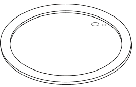
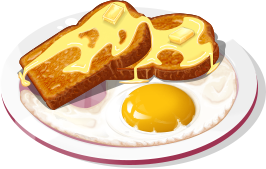
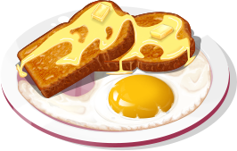
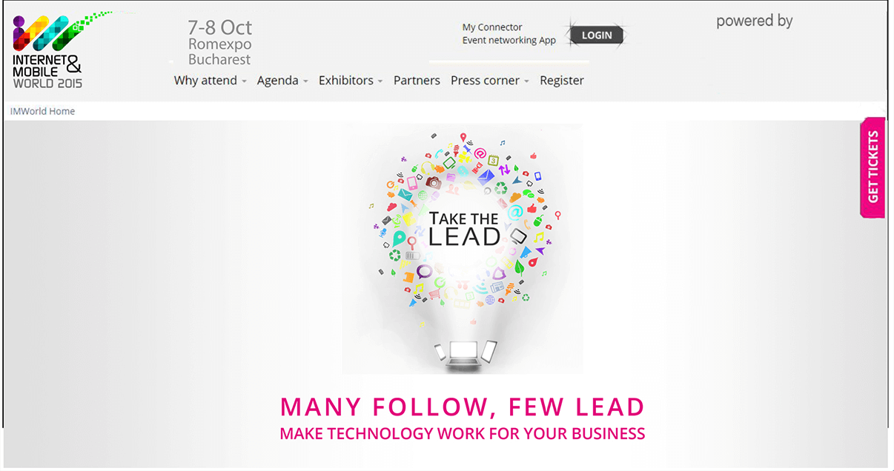
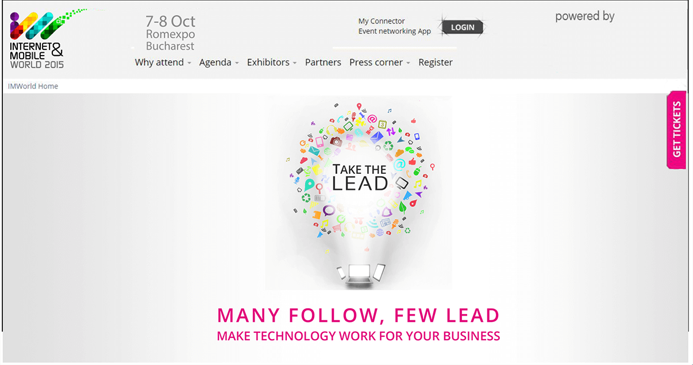

Cooking World
This project is almost done and I will be updating it again when it is complete. The game revolves around completing tasks and unlocking new upgrades and new restaurants. I had to create all the tables, almost all the cooking utensils, machines and almost all the cooking ingredients.
Bellow is the first table, we already had cooking elements to go on top of it. I started by making a detailed sketch then made shapes of every element so that I can later work on the texture of each element. The most complicated part were the bricks therefore I created 5 bricks, all of them different in texture and color, then I changed their perspective and arranged them appropriately.
The second table was entirely made by me except for the fruit, coconut and chocolate, found on the left side next to their specific bowls. I created all the textures myself using special brushes.
Now for a more in-depth look on each element from the table. Below is the frappe. My work process is the same as on the tables but beyond that I also had to animate the machine and the glass. I did that frame by frame in Photoshop.
These are the 3 donut cream bowls for I which I also had to make frame by frame animations. The animation happen when the user taps on them.
Next are the donut toppings bowls. These also have a small animation on tap.
The trays were made by me but the fruit, coconut and chocolate were not.
Donuts in 3 different states, uncooked, cooked and burned. The 3 creams and their specific toppings.
The donut wood plates.
The donut fryer was a lot of work because it had to look good empty.
The last element was the recycle bin which never moves so I only made the front of it.
The 3rd table was the most complex so far because of the croissant ovens. Everything besides the ingredients on the left were drawn by me. My process can be seen in detail below, I start with a sketch then make the shapes and end with the textures.
Now for a look on the elements on top of the table, starting with the toast. The texture took a long time because I had to do a lot of trial and error until I was satisfied with the result.
The toaster which will be animated in Unity.
Next to the toast on the plate are the eggs, We have them in the bowl, fried and burned.
And we have the plate with everything on it.
 

The pan was a lot harder than I initially though but I was eventually satisfied with the result.
The gas cooker was very satisfying to draw since it was all about finding the right perspective for every element that went on top of each other.

The oven in its 3 forms - emply slot, oven closed and oven open
And the orange juicer and glass along with its animation.
For the 4th table I reused cooking elements from the other tables but taking advantage of the extra time that gave me I made a special wood texture for the table. The only elements besides the table I had to draw were the trash can and bread bowl.
And the 5th table is the one I am working on at the moment. The body of the table is done but the elements on top are not and they are my main focus at the moment.


 
